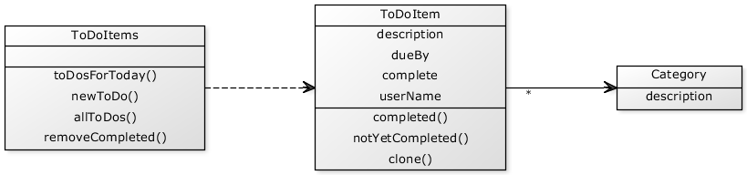
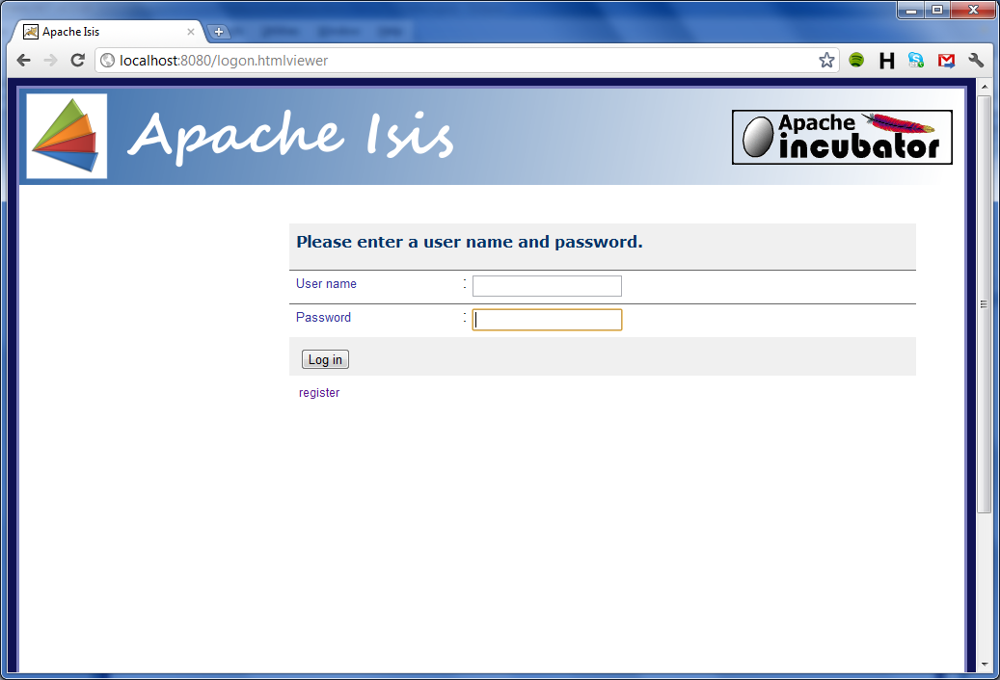
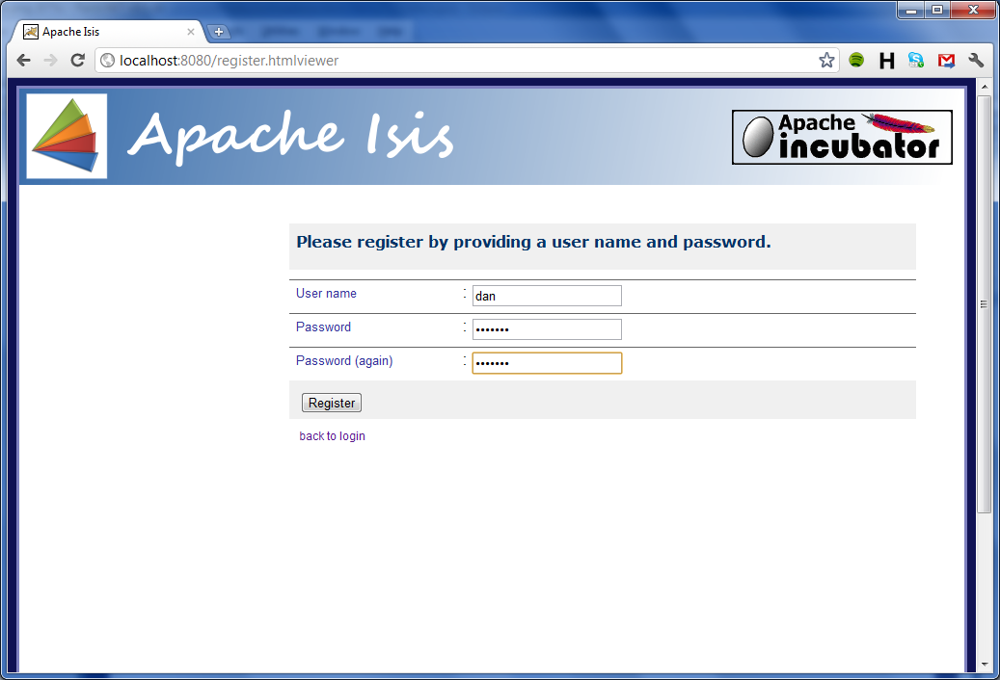
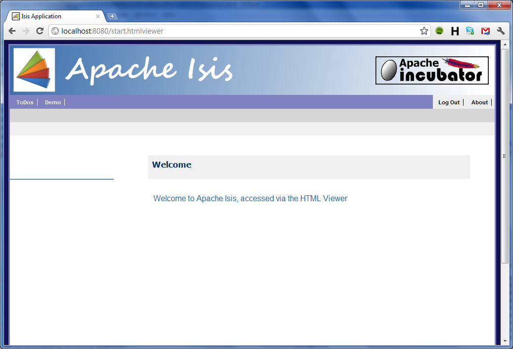
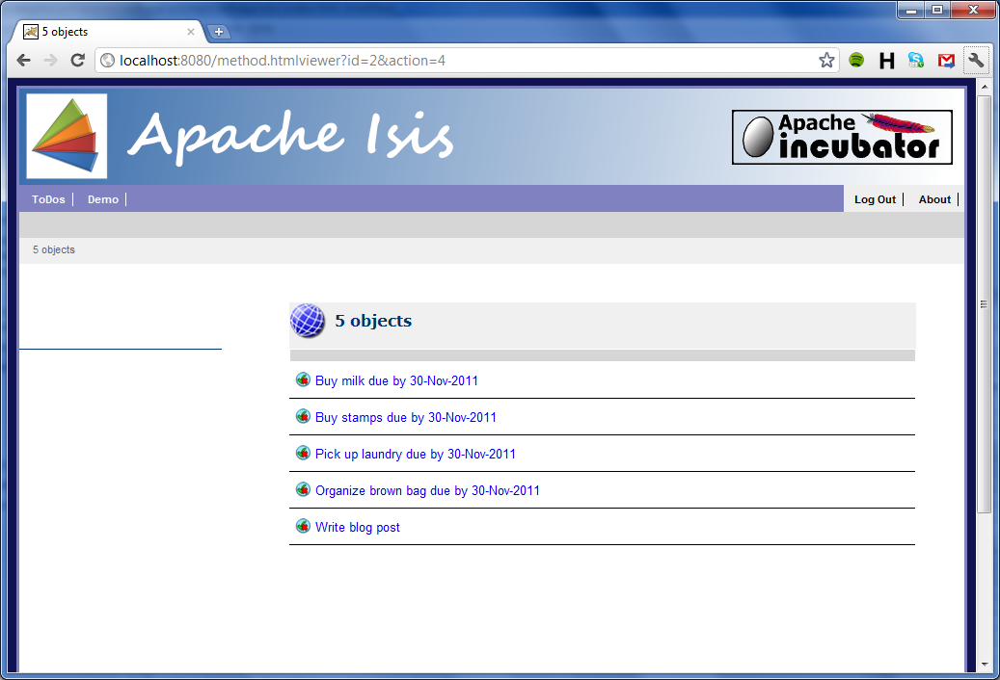
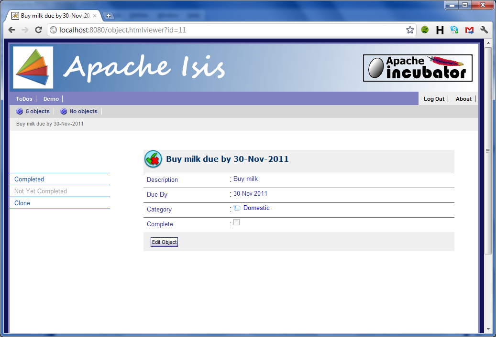
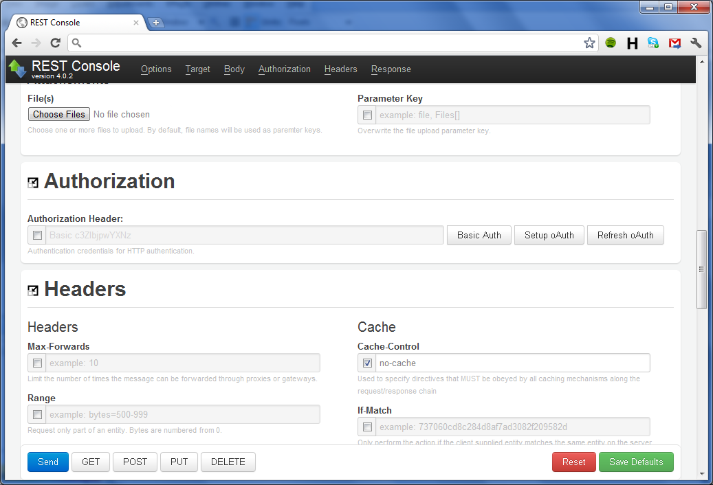
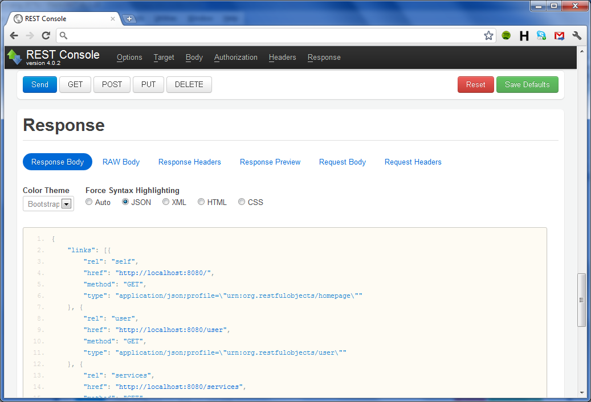
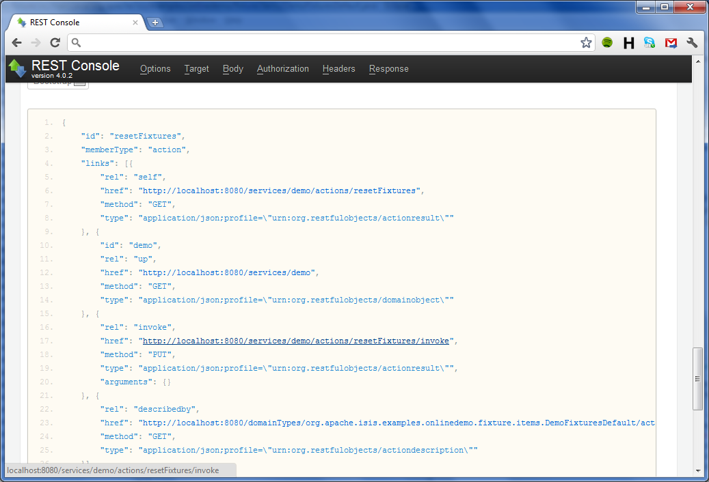

This is an online demo for Apache Isis, a framework to let you rapidly develop domain-driven apps in Java. Isis defines a clean programming model, has BDD and JUnit testing support, and provide access to that domain model using various presentation technologies.
In particular, you can use Isis to access your app through either a REST API or through a webapp. Both of these are generated dynamically at runtime (you code nothing other than the domain model).
Table of Contents
- The domain model of the app (including the source code)
- The automatically-generated webapp
- The REST API
- Next Steps
Domain Model
The domain model (diagram generated using yuml.me) is:
Pretty much the entire source code for this webapp is the above three classes; in particular there is no code relating to the presentation layer (webapp or REST API). To gain a better idea of Isis' programming model, you can also view the source code and browse the javadoc.
HTML WebApp
To access the webapp, browse to htmlviewer; this redirects in turn to the logon page:

Click on the register link and choose a user name and password (nb: the demo runs under http so don't use a valuable password):

Go back to the logon page and log on; you should see the home page:

At the top of the page is a link for the ToDoItems repository (shown in the domain model diagram above). There is also a Demo service; this is used to setup a sample set of ToDoItems. Click on this:

... and then click on the Reset Fixtures action link on the left:
Now click on the link to one of the newly created objects:
The webapp is entirely generated from the domain object. Compare the app with the source code to see how the metadata is used by the framework.
REST API
As well as the webapp representation, Isis also represents the domain object model through a REST API. The representations returned are in JSON format; with resource URLs mapping to objects, properties, collections and actions. In fact the REST API implemented by Isis is formally documented as the Restful Objects specification. This aims to provide a cross-platform standard for exposing domain object models via REST. The Isis viewer that implements the spec is called the json-viewer.
(Provided that you access it using an Accept header of application/json, the REST API can be accessed at the root of the webapp. For this we recommend that you use a browser extension; this will also let you interact with the domain rather than merely browse it read-only. A particularly good extension for Chrome is REST Console, but there are similar extensions for Firefox.
If you want, you can still access the REST API directly from a web browser. Even here there are useful extensions; for example the JSONView extension for Chrome will render the returned JSON in a color-coded collapsible display. One caveat: browse to the services resource instead (because the browser sets an Accept header of text/html, browsing to root will redirect you to this documentation instead).
Whichever way you access the REST API, you'll find that the online demo also protects the json-viewer resources using HTTP Basic Auth (the mechanism used is pluggable). So the first step is set up security. Assuming you are using REST Console, browse to the authorization section:
Press Basic Auth, and enter username and password. (The json-viewer provides no mechanism to register users, so these will need to be a user that you've registered using the html-viewer):

Next, it's important to set the Accept header to application/json. It's also correct (though not so essential) to set Content-Type to application/json also:

After this has been done, hit "Save Defaults" (so that Rest Console remembers these settings for all subsequent requests).
Now, go to the Target section and specify [the root of this webapp] as the URL (nb: the screenshot says http://localhost:8080, but you should use the actual URL of this webapp)
Submit this link using HTTP GET; the Rest Console should scroll to the response:
The console is clever enough to notice links in the response; so if the link indicates a method of GET, then it can be followed just by clicking (such as the services link, below):

The response from the services link is conceptually equivalent to the home page of the HTML viewer. In particular, you should see links representing the ToDoItems repository and Demo service:

Click through to the Demo service, and from there through to its (representation of the) resetFixtures() action:
In this representation is a link to the action invoke subresource. However, unlike other links, this can only be followed using a PUT (because the link is @Idempotent - it has side-effects). Attempting to follow the link with a GET will return a 406 "Not Acceptable" error.
However, we can use Rest Console to follow the link. Copy the link up to the Target, and then, for the body, enter "{}" (taken from the link in the action's representation, and indicating no arguments):

Submit this request, and the action will be invoked:

Next Steps
If you wish, you can download the WAR file here. It uses an in-memory objectstore, so there is no set up (but note also: any data will be lost when you restart the app).
To use the WAR, either:
- deploy in the usual way to a servlet container (eg copy to webapps directory for Tomcat); or
- because the WAR is self-hosting, simply start from the command line.
Use:
java -jar isis-onlinedemo.war
(add --help for options)
The source code can be found in Isis source code repository (this app can be found in examples/onlinedemo), and is built using Maven.
If you're interested in exploring Apache Isis further, you'll find that it can be used in a variety of ways. The main use cases are:

For further information, please see the Isis website and subscribe to the isis-dev mailing list.